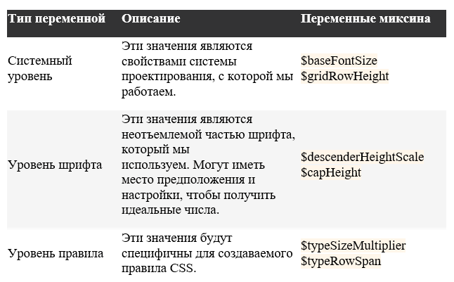

Как настроить высоту строки в CSS
Обзор типографских терминов
В традиционном западном дизайне строка текста состоит из нескольких частей:
- Базовая линия: это воображаемая линия, на которой находится текст. Когда вы пишете в блокноте с разметкой, базовая линия — это строка, на которой вы пишете.
- Нижняя линия: эта линия находится чуть ниже базовой линии. Это линия, которой касаются некоторые символы — такие как прописные g, j, q, y и p.
- Высота X: это (очевидно) высота обычной строчной буквы x в строке текста. Как правило, это высота других строчных букв, хотя некоторые из них могут иметь части символов, которые будут превышать x-высоту. Для всех намерений и целей, это считается воспринимаемой высотой строчных букв.
- Высота заглавных букв: это высота большинства заглавных букв в данной строке текста.
- Верхняя линия: линия, которая часто отображается чуть выше высоты заглавных букв, когда некоторые символы похожие на строчные буквы h или b могут превышать нормальную высоту заглавных букв.
Каждая из частей текста, описанных выше, является неотъемлемой частью самого шрифта. Шрифт разработан с учетом каждой из этих частей; тем не менее, есть некоторые части типографики, которые оставлены на усмотрение разработчика (как вы и я!), а не дизайнера.
Одной из них является направляющие.
Разработчик CSS может подумать: «Хорошо, направляющая — это высота строки, давайте двигаться дальше». Хотя эти два понятия взаимосвязаны, они также отличаются в некоторых очень важных аспектах. Давайте возьмем пустой документ и добавим к нему классический «сброс CSS»:
* {
margin: 0;
padding: 0;
}
Когда браузер обнаруживает это свойство line-height, он на самом деле берет строку текста и помещает ее в середину «строки», высота которой соответствует высоте строки элемента. Вместо того, чтобы устанавливать начальную строку для шрифта, мы получаем что-то похожее на заполнение одной из сторон строки.
Как показано выше, строковое поле оборачивается вокруг строки текста, где направляющие создаются с использованием интервала ниже одной строки текста и выше следующей. Это означает, что для каждого текстового элемента на странице в конкретном текстовом блоке будет половина первой строки над первой строкой текста и половина первой строки после последней строки текста.
Что еще более удивительно, так это то, что при явной установке элемента line-height и font-size для одного и того же значения будет оставлено дополнительное пространство над и под текстом.
Это связано с тем, что даже если для параметра font-size установлено значение 32px, фактический размер текста является чем-то меньшим, чем это значение из-за созданного поля.
Научить CSS рассматривать высоту строки как направляющие
Направляющие можно задать в CSS довольно просто. Майкл Таранто выпустил инструмент под названием Basekick, который решает эту проблему. Это достигается путем применения отрицательного верхнего поля к псевдо-элементу ::before и translateY к самому элементу. Конечным результатом является строка текста без лишних пробелов вокруг нее.
Самую актуальную версию формулы можно найти в исходном коде для Системы проектирования Braid от SEEK. В приведенном ниже примере мы пишем миксин Sass, чтобы он выполнял вычисления, но ту же формулу можно использовать с миксинами JavaScript, Less, PostCSS или чем-то еще, что предоставляет такие математические функции.
@function calculateTypeOffset($lh, $fontSize, $descenderHeightScale) {
$lineHeightScale: $lh / $fontSize;
@return ($lineHeightScale - 1) / 2 + $descenderHeightScale;
}
@mixin basekick($typeSizeModifier, $baseFontSize, $descenderHeightScale, $typeRowSpan, $gridRowHeight, $capHeight) {
$fontSize: $typeSizeModifier * $baseFontSize;
$lineHeight: $typeRowSpan * $gridRowHeight;
$typeOffset: calculateTypeOffset($lineHeight, $fontSize, $descenderHeightScale);
$topSpace: $lineHeight - $capHeight * $fontSize;
$heightCorrection: 0;
@if $topSpace > $gridRowHeight {
$heightCorrection: $topSpace - ($topSpace % $gridRowHeight);
}
$preventCollapse: 1;
font-size: #{$fontSize}px;
line-height: #{$lineHeight}px;
transform: translateY(#{$typeOffset}em);
padding-top: $preventCollapse;
&::before {
content: "";
margin-top: #{-($heightCorrection + $preventCollapse)}px;
display: block;
height: 0;
}
}
На первый взгляд, этот код определенно выглядит как множество магических чисел. Но это может быть разделено на части, если подумать об этом в контексте конкретной системы. Давайте рассмотрим это подробнее:
Уточнение кода
Вместо того, чтобы выгружать весь код в один миксин SCSS, давайте организуем его немного лучше. С точки зрения систем, заметим, что есть три типа переменных, с которыми мы работаем:
Оперируя этими терминами, мы можем значительно расширить систему. Давайте рассмотрим каждую группу по очереди. Во-первых, переменные системного уровня могут быть установлены глобально, поскольку они вряд ли изменятся в ходе разработки проекта. Это уменьшает количество переменных в основном миксине до четырех:
$baseFontSize: 16;
$gridRowHeight: 4;
@mixin basekick($typeSizeModifier, $typeRowSpan, $descenderHeightScale, $capHeight) {
/* Same as above */
}
@mixin Lato($typeSizeModifier, $typeRowSpan) {
$latoDescenderHeightScale: 0.11;
$latoCapHeight: 0.75;
@include basekick($typeSizeModifier, $typeRowSpan, $latoDescenderHeightScale, $latoCapHeight);
font-family: Lato;
}
CSS
.heading--medium {
@include Lato(2, 10);
}
.heading--medium {
@include Lato(2, 10);
}
В результате мы можем без особых усилий создавать идеальные до пикселям дизайны.
Это дает нам уникальную сверхспособность при создании макетов на веб-сайтах: впервые в истории мы можем реально создавать страницы с точностью до пикселя. Соедините эту технику с некоторыми основными компонентами макета, и мы можем начать создавать страницы так же, как в инструменте дизайна
Если мы хотим, чтобы CSS использовал более традиционный стиль установки шрифта вместо линейного блока, мы хотим, чтобы в одной строке текста не было места ни над, ни под ним, но чтобы многострочные элементы сохраняли свое полное значение line-height.
- $baseFontSize: Это нормальный font-size для нашей системы, на основе которого все остальное будет управляться. Мы будем использовать 16px в качестве значения по умолчанию.
- $typeSizeModifier: Это множитель, который используется вместе с базовым размером шрифта для определения правила font-size. Например, значение 2 в сочетании с базовым размером шрифта 16 пикселей даст нам font-size: 32px.
- $descenderHeightScale: Это высота нижней линии шрифта, выраженная в виде отношения. Для Lato это примерно 0,11.
- $capHeight: Это конкретная высота шрифта, выраженная в виде отношения. Для Lato это около 0,75.
- $gridRowHeight: В макетах по умолчанию обычно используется вертикальный ритм, что обеспечивает комфортное чтение. Например, все элементы на странице могут быть разнесены на четыре или пять пикселей. Мы будем использовать 4 в качестве значения, потому что оно легко делится на нашу $baseFontSize 16px.
- $typeRowSpan: Как и $typeSizeModifier, эта переменная служит множителем, который будет использоваться с высотой строки сетки для определения значения правила line-height. Если наша высота строки сетки по умолчанию равна 4, а диапазон строк текста равен 8, это дает нам значение line-height: 32px.
Двигаясь к стандарту
Хотя, чтобы научить CSS вести себя, как инструменты дизайна, потребует немного усилий, свет в конце туннеля уже виден. Также предложено дополнение к спецификации CSS для естественного переключения этого поведения. Предложение в его нынешнем виде добавит дополнительное свойство к текстовым элементам, похожим на line-height-trim или leading-trim.